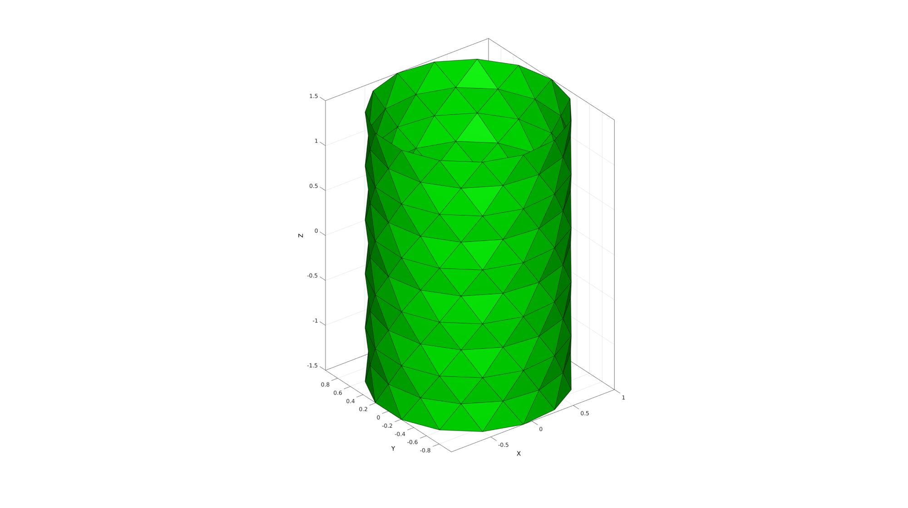
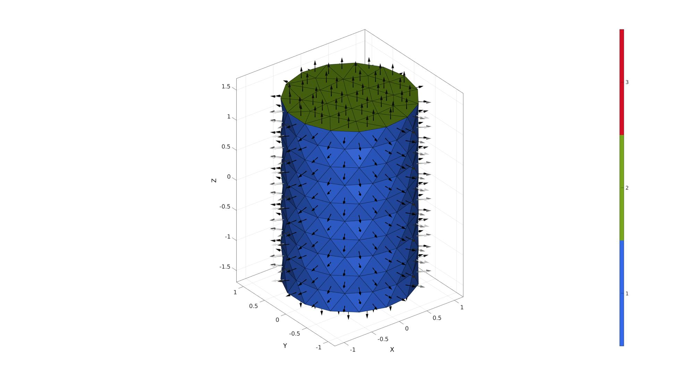

patchcylinder
Below is a demonstration of the features of the patchcylinder function
Contents
Syntax
[F,V]=patchcylinder(r,nr,h,nz,ptype);
Description
Use patchcylinder to generate triangulated spheres with nearly geodesic triangle distributions. The density of the triangulation can be controlled through a particular choice of n (number of mesh refinement steps).
Examples
clear; close all; clc;
Plot Settings
fontSize=15; faceAlpha=0.8; edgeColor=0.*ones(1,3); edgeWidth=2;
Building a patched cylinder model
Defining patched cylinders with different mesh types
cylRaduis=1; %Cylinder radius numRadial=12; %Number of elements in the circumferential direction cylHeight=3; %height numSteps=7; %Number of elements in the height direction meshTypes={'quad','tri_slash','tri'}; %Patch Types pColors=gjet(numel(meshTypes));
Creating and visualizing patch data
cFigure; for q=1:1:numel(meshTypes) [F,V]=patchcylinder(cylRaduis,numRadial,cylHeight,numSteps,meshTypes{q}); subplot(1,3,q); hold on; title([meshTypes{q},' type cylinder'],'FontSize',fontSize,'Interpreter','none'); axisGeom(gca,fontSize); gpatch(F,V,pColors(q,:)); patchNormPlot(F,V); camlight headlight; end drawnow;

Using an input structure instead
Creating input structure
inputStruct.cylRadius=1;
inputStruct.numRadial=15;
inputStruct.cylHeight=3;
inputStruct.numHeight=11;
inputStruct.meshType='tri';
Derive patch data for a cylinder
[F,V]=patchcylinder(inputStruct);
Visualizing cylinder model
cFigure; hold on; gpatch(F,V,'g'); % patchNormPlot(F,V); axisGeom(gca,fontSize); camlight headlight; drawnow;
Creating a closed cylinder model
% Creating input structure inputStruct.cylRadius=1; inputStruct.numRadial=15; inputStruct.cylHeight=3; inputStruct.numHeight=[]; %if empty infer from point spacing of circle inputStruct.meshType='tri'; inputStruct.closeOpt=1;
Derive patch data for a cylinder
[F,V,C]=patchcylinder(inputStruct);
Visualizing meshed regions
cFigure;
gpatch(F,V,C);
patchNormPlot(F,V);
colormap(gjet(3)); icolorbar;
axisGeom;
camlight headlight;
drawnow;
 
GIBBON www.gibboncode.org
Kevin Mattheus Moerman, gibbon.toolbox@gmail.com
GIBBON footer text
License: https://github.com/gibbonCode/GIBBON/blob/master/LICENSE
GIBBON: The Geometry and Image-based Bioengineering add-On. A toolbox for image segmentation, image-based modeling, meshing, and finite element analysis.
Copyright (C) 2006-2021 Kevin Mattheus Moerman and the GIBBON contributors
This program is free software: you can redistribute it and/or modify it under the terms of the GNU General Public License as published by the Free Software Foundation, either version 3 of the License, or (at your option) any later version.
This program is distributed in the hope that it will be useful, but WITHOUT ANY WARRANTY; without even the implied warranty of MERCHANTABILITY or FITNESS FOR A PARTICULAR PURPOSE. See the GNU General Public License for more details.
You should have received a copy of the GNU General Public License along with this program. If not, see http://www.gnu.org/licenses/.